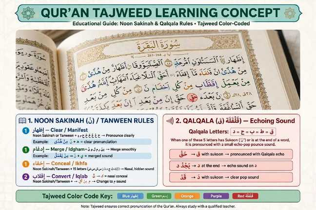

What Is Tajweed and Why Is It Important for Correct Quran Reading?

Tajweed is a set of rules that helps Muslims recite the Quran correctly as Prophet Muhammad (PBUH) recited it. For beginners in USA & UK, learning Tajweed can improve pronunciation and fluency.
Why Tajweed Matters
Small changes in pronunciation can change meaning. For example, Qalb (heart) and Kalb (dog) differ by one letter. Learning correct pronunciation helps protect the meaning of Quranic words.
Basic Tajweed Rules for Beginners - Start Here
- Noon Sakinah & Tanween: Izhar, Idgham, Iqlab, Ikhfa - see full guide
- Qalqala [NEW - Most Important for Beginners]: Qaf, Taa, Baa, Jeem, Dal when sakin - bouncing sound. Learn Qalqala with examples →
- Madd [NEW]: Elongation of 2, 4 and 6 counts - Learn Madd types →
- Ghunna [NEW]: Nasal sound in Noon & Meem mushaddad - Learn Ghunnah guide →
📚 Tajweed for Beginners - Complete Series [NEW 2026]
Master Tajweed step-by-step - our new cluster for USA/UK beginners:
Don't learn everything at once. Start with one rule at a time and practice with teacher correction. See our Tajweed course .
How to Learn Tajweed Online
One-on-one lessons with a qualified Quran teacher can help you practice Tajweed and receive live pronunciation corrections. Students in USA and UK can learn with flexible online schedules.
We offer special programs for every family:
- After School Quran Classes for Kids in USA (3-6 PM EST) - NEW - Perfect for Tajweed after school 3:30PM EST
- Quran Classes for Women & Sisters in USA - Female Teachers - NEW - Learn Tajweed comfortably with sister teacher
- Online Quran Classes for Adults in UK - GMT/BST Evenings - NEW - Evening Tajweed classes for UK adults
See our Quran teachers or explore pricing from $20/month .
📚 Continue Reading - Best by Country
- Best Online Quran Classes for Kids in USA
- After School Quran Classes for Kids in USA (3-6 PM EST)
- Online Quran Classes for Women & Sisters in USA
- Quran Classes for Adults in USA
- Quran Classes for Kids in UK
- Online Quran Classes for Adults in UK - GMT Evenings
- How Much Do Classes Cost? USA & UK Guide
- Ultimate Guide - Online Quran Classes [PILLAR]